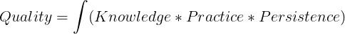

👋 Hi! I am Pratik Kumar.
Welcome to my personal blog page. I write mostly on deep learning and data science. I will be happy to hear your thoughts and feedback. View my recent posts below.
💭 Thought
Inspired by Patrick Winston’s teachings(view here) where he shares the formula of the quality of communication. For me, Quality of work is the combination of Knowledge, Practice and Persistence.

📜 Medium Posts
View my post published on Medium,
- [What happens to developers in 2020?](https://towardsdatascience.com/what-happens-to-programmers-in-2020-d04a6bd7452f?source=friends_link&sk=a880dfdd6435c792d33b284c98705a62)
- [Universal Approximation Theorem of Neural Networks](https://towardsdatascience.com/exploring-neural-networks-and-their-fascinating-effectiveness-81ebc054cb16)
- [Kaplan Meier Estimator](https://towardsdatascience.com/understanding-kaplan-meier-estimator-68258e26a3e4)
- [Exploring Neural Networks](https://medium.com/towards-artificial-intelligence/neural-networks-from-scratch-a-brief-introduction-for-beginners-d3776599aaac?source=friends_link&sk=701beeb7b1be2e6c85c641119ca35e72)